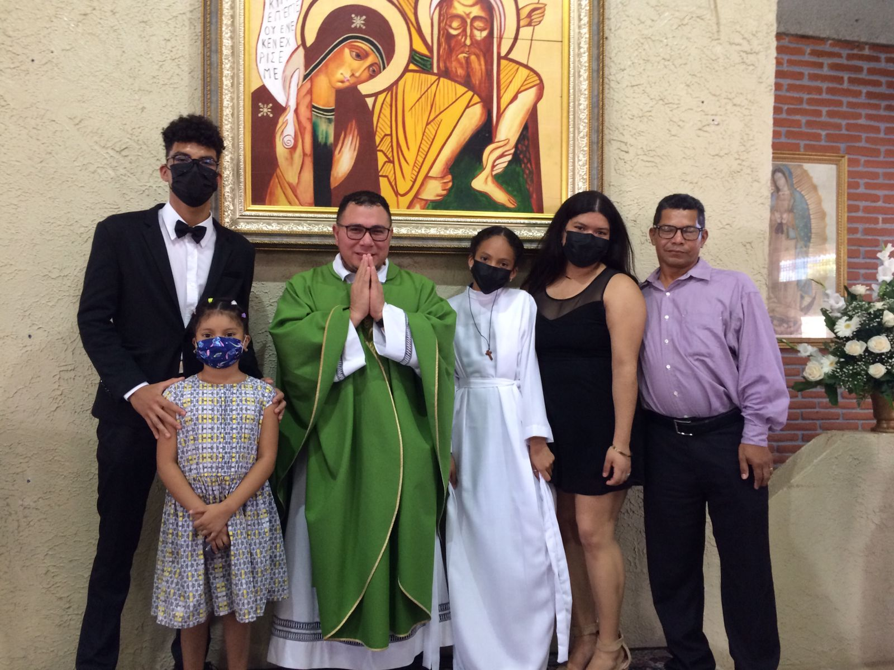

Josue David Flores
| Sobre Mi | Mis Pasatiempos | Fotos | Mis Redes |
|  |

|
Sobre Mi

Mi nombre es Josue David Flores naci en Comayagua un 18 de marzo del 2004, tengo 18 años y soy el mayor y unico barón de una familia de tres mujeres. Naci y me crie en una familia de clase trabajadora que desde muy pequeño me enseñaron a como ganarme la vida, mi abuelo trabaja en supervicion publica con la alcaldia de Comayagua, mi abuela es jubilada del area de trabajo socila en el Hospital Santa Tereza, mi madre trabaja en la recepcion de emergencia en Clinicas del Valle mi padre trabaja como repartidor en Frito Lay, mi padre fue quien mas me inculco el trabajo desde muy temprana edad, a mis 7 años mi padre me llevaba a trabajar con el, conoci muchos lugares con el y en sus ultimos 4 trabajos conoci a mucha gente y algunas amistades de mi padre, mi padre me enseño a manejar y ahora se manejar camion liviano, carro y rastra.
Empece mis estudios en el Jardin de niños Inmaculada, conoci a mis amigo que al son de ahora sigo conviviendo con ellos, mi primaria la hice en la escula Inmaculada Concepcion (ahora Centro de Educacion Basicca Inamculada) gracias a las profesoras Gricelda Andino (1ro hasta 3ro) y Luz Marina de Borjas (4to hasta 6to) que me vieron crecer, me corrigieron y estoy donde estoy gracias a ellas.
Mi ciclo comun lo termie en el Instituto Tecnico Comalhuacan, gracias a este colegio pude conseguir mis ultimos tres trabajos, me gradue del area de Estructuras Metalicas (Soldadura), pero tambien conozco un poco de las areas de Electricidad y Carpinteria, mi vida se empezo a descarrilar al momento de estar en este colegio, me deje influir con malos comapeñeros que me sacaban de clases para salir a juagar futbol, reprobe y repeti octavo grado, pase esos dos años en la Escuelita, mi vida despues iba a dar un giro de 360 grados al ver como mis padres veian su esfuerzo tirado a la basura con mi aptitud, en noveno grado me propuse a pasar limpio los ultimos dos años y depues probar con suerte por segunda vez el examen del Marista, a pesar que mis padres en esa etapa tan dificl que pase se divorsiaron, me logre superar y pude mostrarles lo que su hijo mayor era capaz de hacer.
Despues de pasar limpio 9 y 10, se me dio la oportunidad de cambiar mi vida y mi futuro en un nuevo colegio, al entrar al Marista me senti totalmente diferente, habia mas precion y mucha mas responsabilidad, por fin encontre un colegio apto para mi, soy de esas personas que trabaja mejor bajo precion, gracias a la profe Digna que fue una de las profesoras que me apoyo y me animo para entrar a este colegio, ahora estoy a un paso de lograr una de mis metas, graduarme del colegio y darles ese titulo a mis padres, ese titulo que tanto quieren ver.